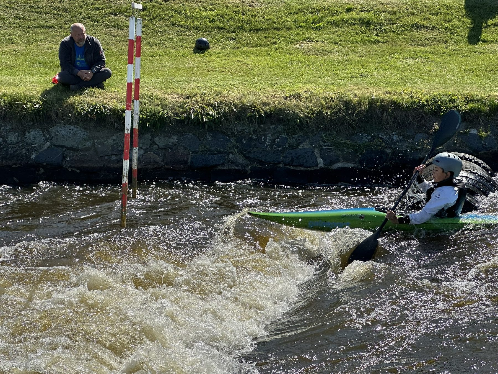
Děti a mládež
Nábor od 8 let, tréninky na kanále i v bazénu, zimní a letní soustředění. Dovednosti na vodě i výkonnostní sport.
Jak se přihlásit →Trénujeme děti, vychováváme reprezentanty a pořádáme závody od lokálních po mezinárodní. Postavili jsme svůj kanál a rozvíjíme areál, ve kterém jsou všichni vítáni.
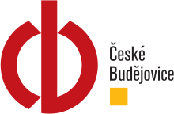
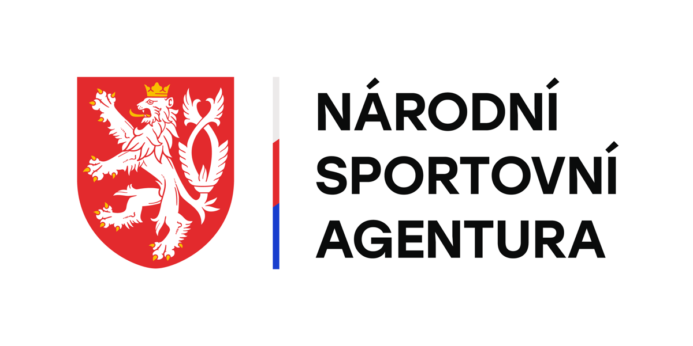
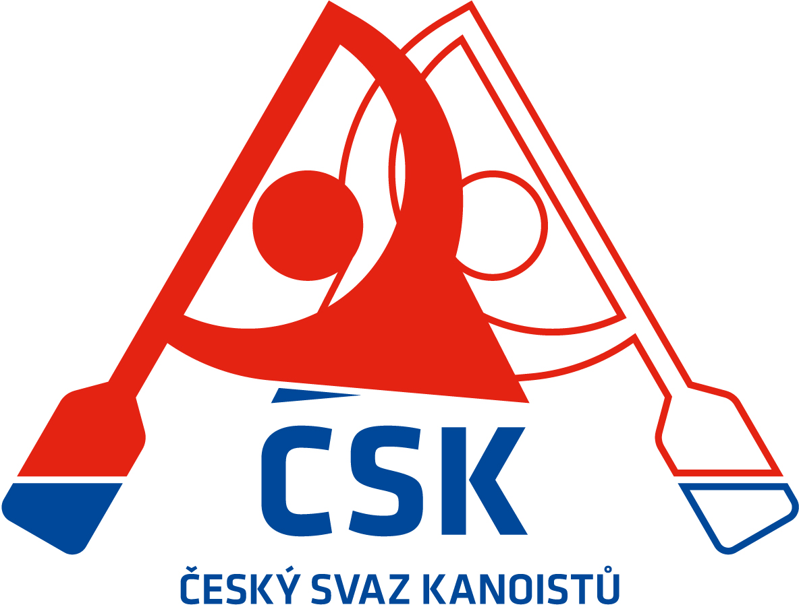
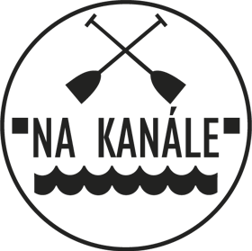
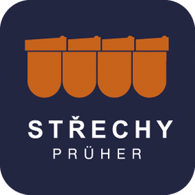
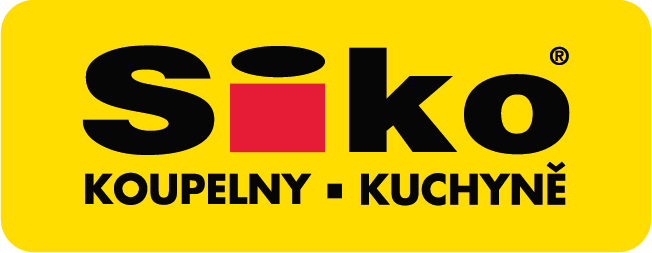
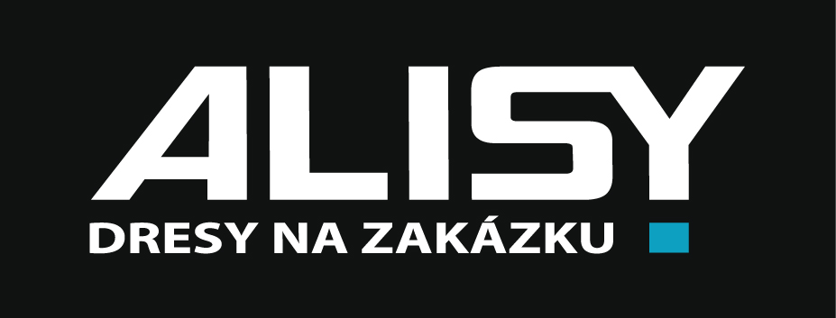
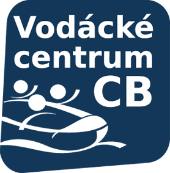
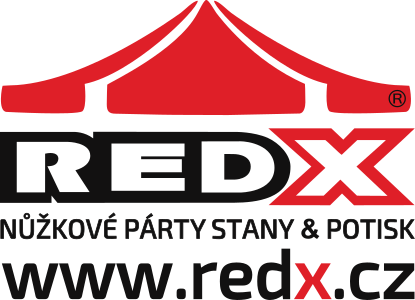

Nábor od 8 let, tréninky na kanále i v bazénu, zimní a letní soustředění. Dovednosti na vodě i výkonnostní sport.
Jak se přihlásit →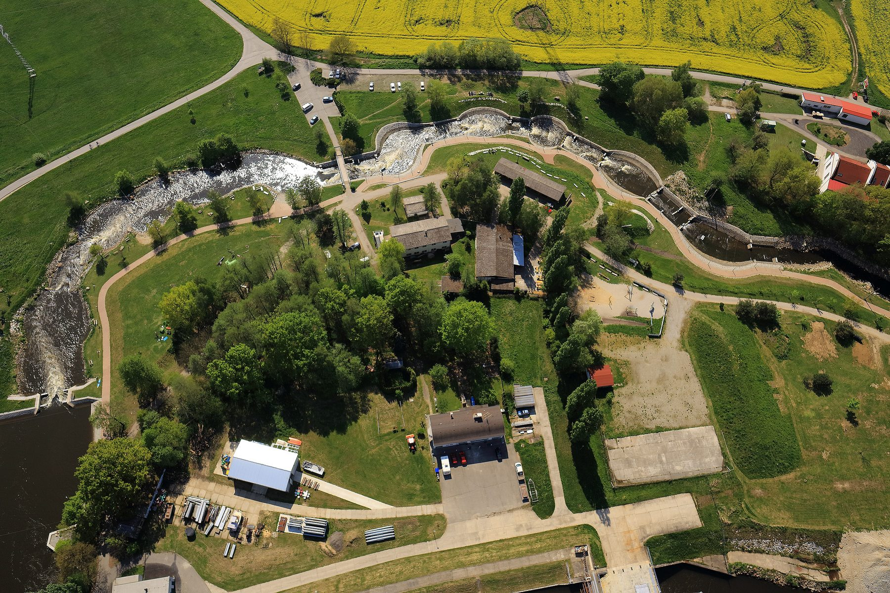
Divoká voda, kemp, restaurace. Výkonnostní sport, zábava i odpočinek pro všechny příchozí.
Více o areálu →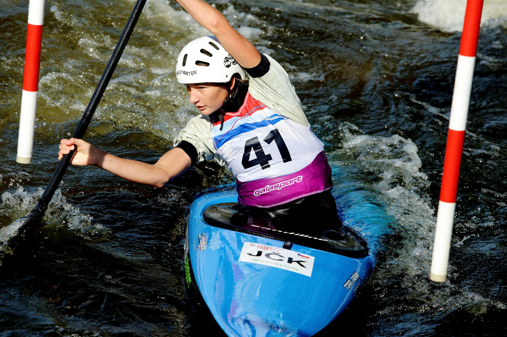
Veřejné, kvalifikační i mezinárodní závody. Propozice, výsledky a informace pro návštěvníky.
Kalendář →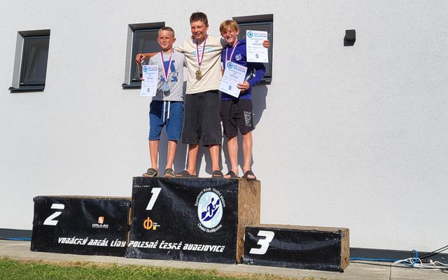
O prázdninách jsme měli tu příležitost pořádat mezinárodní závod ze série ECA Junior Slalom Cup za účasti mladých slalomářů z mnoha zemí světa. Závodníci na trati…
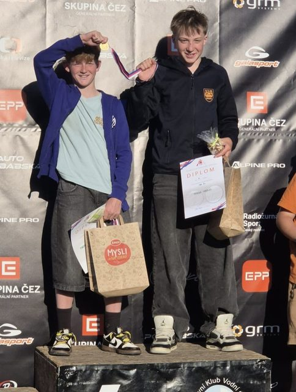
Areál Lídy Polesné v Českých Budějovicích hostil o víkendu 23. a 24. května 3. a 4. závod Českého poháru žáků ve vodním slalomu. Oba závodní dny provázelo krásné…
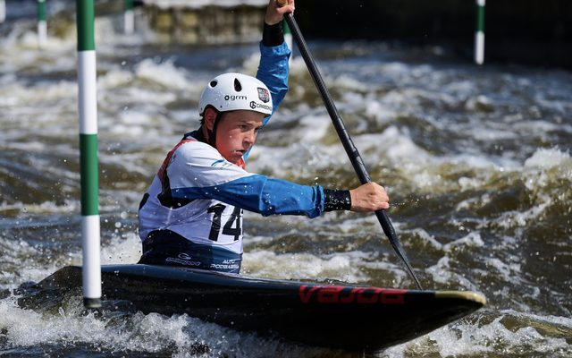
Domácí sezóna vodního slalomu odstartovala dvěma závodními víkendy na umělé slalomové dráze v pražské Troji. Původně se měl 1. závodní víkend uskutečnit na Trnávce,…
Od propusti starého jezu, kde trénovala Lída Polesná, přes dráhu postavenou brigádnicky členy oddílu až po přestavbu do olympijských parametrů. Areál nese jméno čtyřnásobné mistryně světa, která u toho byla od začátku.
Založen oddíl kanoistiky TJ Škoda České Budějovice – předchůdce dnešního klubu.
Umělá slalomová dráha v Českém Vrbném předána do provozu – postavená z velké části rukama členů.
Přestavba na olympijské parametry za 26 mil. Kč; nominace na OH v Londýně se jede u nás.
Mistrovství Evropy juniorů a U23 – poprvé v historii v České republice.
Kanál žije i mimo oddíl. Každý má svoje — tady je rozcestník, aby se v tom návštěvník vyznal.